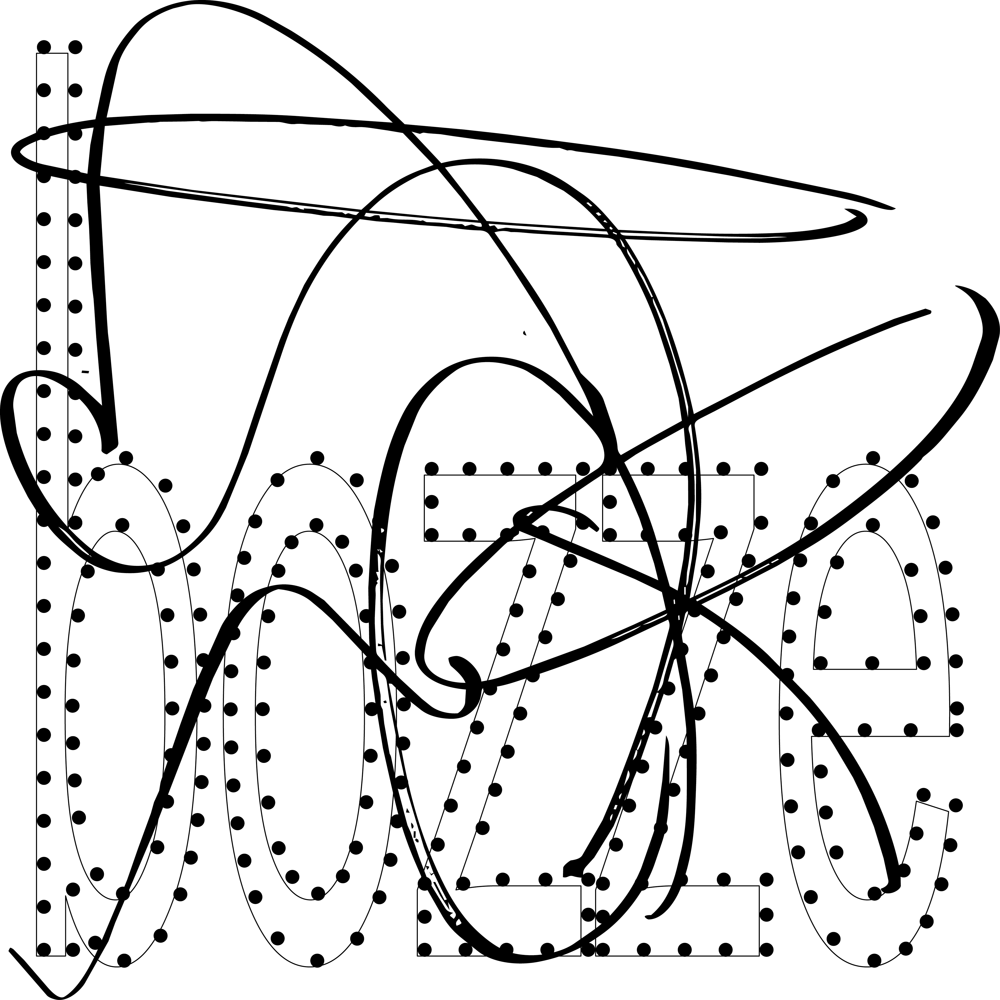

Bozze

Certe volte mi stupisco di non riuscire a fermare il tempo e sentirlo scivolare violentemente tra le
dita, dietro agli occhi, attraverso la bocca e tagliarmi le orecchie. Allora mi accumulo sul fondo buio
e quando tutto sembra farsi assente sento l’odore delle piante scaldate al sole, la sabbia che vibra
sotto l’estate e rilascia quell’aroma secco che penetra nelle narici. E così anche le strade vuote nel
mese di agosto e le cicale pazze, oppure i grilli leggeri dopo un temporale. È strano lo scostamento del
risveglio notturno e trovarsi strappati tra le proprie memorie.
ps. siate pazienti con gli errori di questo album! ancora è incompleto.